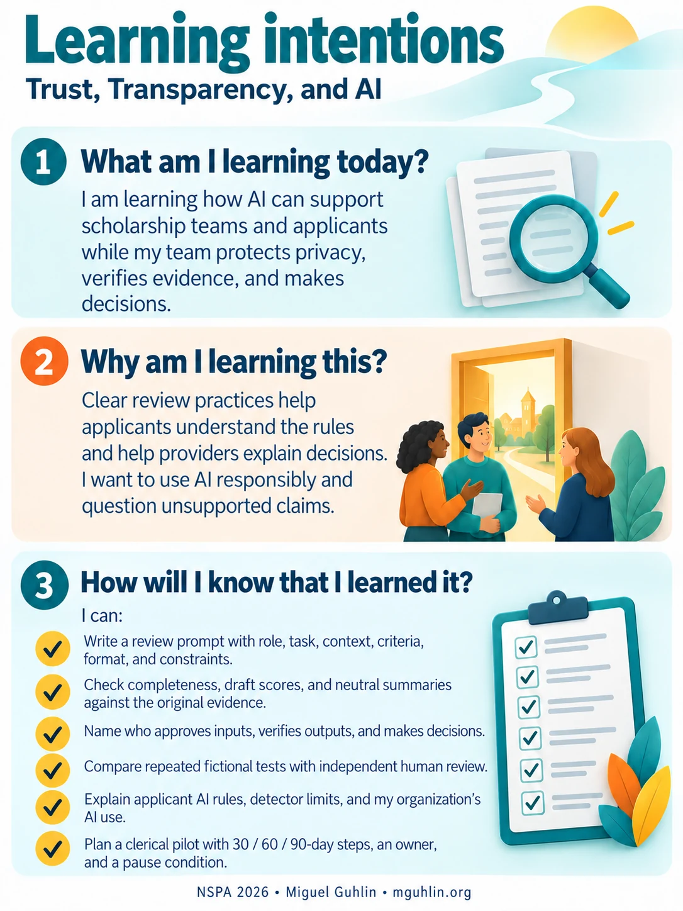

Workshop materials
Resources for discussion and practice
I can use the worked examples in the session companion, extend the applicant-policy conversation, or develop my 30 / 60 / 90-day plan.
Session route
| Focus | Slides | Suggested time | Use |
|---|---|---|---|
| Trust and expectations | 1–4 | 8 minutes | 3:30–3:38 |
| My six-part review request | 5–8 | 12 minutes | 3:38–3:50 |
| Our document follow-up plan | 9–10 | 11 minutes | 3:50–4:01 |
| My rating and the words behind it | 11 | 11 minutes | 4:01–4:12 |
| A summary that preserves the evidence | 12 | 8 minutes | 4:12–4:20 |
| Our workflow and first test | 13–14 | 10 minutes | 4:20–4:30 |
| Applicant rules and a fair response | 15–21 | 18 minutes | 4:30–4:48 |
| My 30 / 60 / 90-day plan | 22–24 | 12 minutes | 4:48–5:00 |
This 90-minute route includes explanations, the eight activities, and transitions. B1–B4 remain optional backups.
Browse all 28 slides
 01. TRUST, TRANSPARENCY, AND AI
01. TRUST, TRANSPARENCY, AND AI 02. A quick pulse
02. A quick pulse 03. Our two perspectives on the same review
03. Our two perspectives on the same review 04. Our guiding principle
04. Our guiding principle 05. Vague and structured prompts
05. Vague and structured prompts 06. My six-part review request
06. My six-part review request 07. The score descriptions I am using
07. The score descriptions I am using 08. The review workflow
08. The review workflow 09. Privacy before processing
09. Privacy before processing 10. Demo 1 · Our document follow-up plan
10. Demo 1 · Our document follow-up plan 11. Demo 2 · My rating and the words behind it
11. Demo 2 · My rating and the words behind it 12. Demo 3 · The evidence behind my summary
12. Demo 3 · The evidence behind my summary 13. Our first tests before a pilot
13. Our first tests before a pilot 14. Where AI fits
14. Where AI fits 15. Applicant AI use spans a spectrum
15. Applicant AI use spans a spectrum 16. Detection has practical limits
16. Detection has practical limits 17. The human cost of a false positive
17. The human cost of a false positive 18. Application design for authenticity
18. Application design for authenticity 19. A finalist’s essay feels “too perfect”
19. A finalist’s essay feels “too perfect” 20. The applicant AI rule my organization chooses
20. The applicant AI rule my organization chooses 21. Transparency goes both ways
21. Transparency goes both ways 22. The three gaps I will work on first
22. The three gaps I will work on first 23. A 30 / 60 / 90-day plan
23. A 30 / 60 / 90-day plan 24. Back to trust
24. Back to trust 25. B1 · Three complete demo prompts
25. B1 · Three complete demo prompts 26. B2 · Questions for an AI vendor
26. B2 · Questions for an AI vendor 27. B3 · A simple applicant disclosure
27. B3 · A simple applicant disclosure 28. B4 · A shared vocabulary
28. B4 · A shared vocabularySources and interpretation
The presentation preserves dates and sample limitations. Historical detector examples do not establish current performance. The hypothetical 1% calculation is illustrative. A small test cannot certify fairness. Teaching examples and policy choices are not official NSPA policy.
- https://studentprivacy.ed.gov/privacy-and-data-sharing
- https://openai.com/index/new-ai-classifier-for-indicating-ai-written-text/
- https://www.vanderbilt.edu/brightspace/2023/08/16/guidance-on-ai-detection-and-why-were-disabling-turnitins-ai-detector/
- https://guides.turnitin.com/hc/en-us/articles/22774058814093-Using-the-AI-Writing-Report
- https://doi.org/10.1016/j.patter.2023.100779
- https://arxiv.org/abs/2602.05769
Additional practice and reference collections
These longer labs use the separate fictional C-101 case and its 0–2 rubric. The current presentation uses A-101–A-103 and a 1–4 community-impact criterion. Keep the exercises separate.
Additional C-101 labs · Readiness checklist · Infographic collection · Complete resource library
My learning intentions

My learning intentions as text
What am I learning today?
I am learning how AI can support scholarship teams and applicants while my team protects privacy, verifies evidence, and makes decisions.
Why am I learning this?
Clear review practices help applicants understand the rules and help providers explain decisions. I want to use AI responsibly and question unsupported claims.
How will I know that I learned it?
I can:
- Write a review prompt with role, task, context, criteria, format, and constraints.
- Check completeness, draft scores, and neutral summaries against the original evidence.
- Name who approves inputs, verifies outputs, and makes decisions.
- Compare repeated fictional tests with independent human review.
- Explain applicant AI rules, detector limits, and my organization’s AI use.
- Plan a clerical pilot with 30 / 60 / 90-day steps, an owner, and a pause condition.